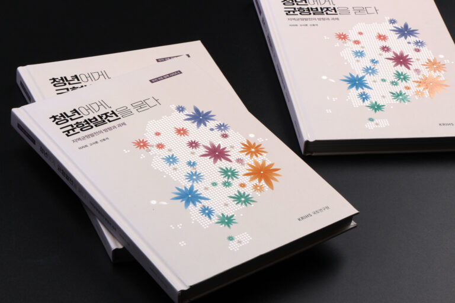
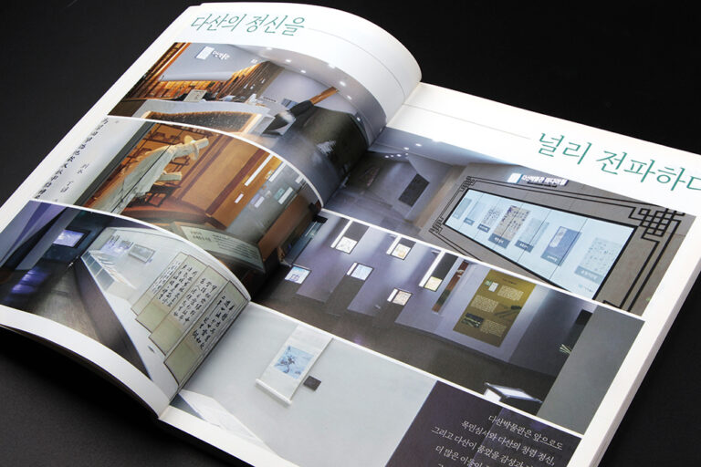
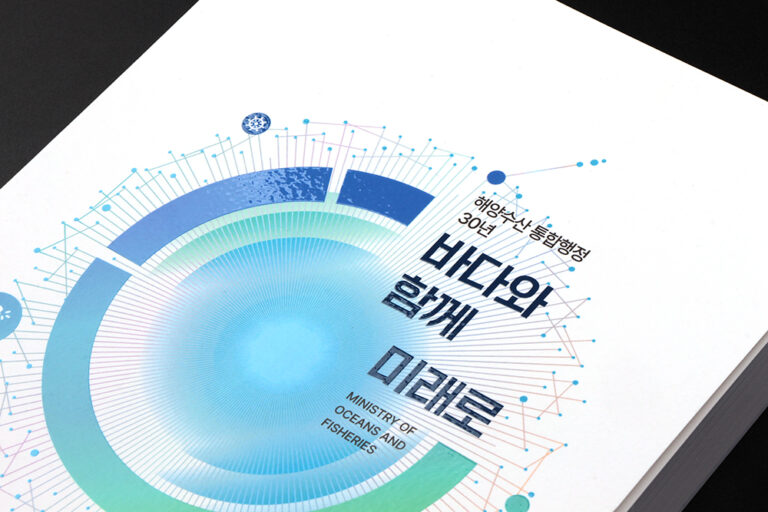
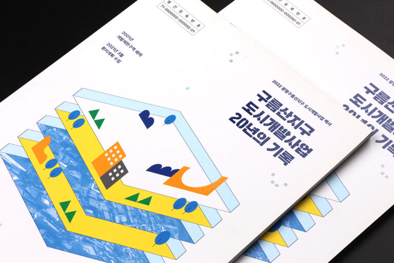

ARTICLES
사례집 제작 인사이트

공공기관
공공기관
공공기관 사례집 제작, 시작과 끝을 가르는 한 가지
읽어보기
문화·재단
문화·재단
문화재단 사례집, 제본방식에 따라 디자인은 달라집니다
읽어보기
의료·복지
의료·복지
의료기관 사례집 인터뷰, 신뢰를 담는 질문법
읽어보기교육
교육
대학 사례집 원고, 방대한 자료를 지면에 앉히는 법
읽어보기
지자체
지자체
지자체 우수사례집, 성과를 시민에게 전달하는 법
읽어보기금융·기업
금융·기업
기업 사례집, 브랜드 톤을 지면에 담는 법
읽어보기공공기관
공공기관
사례집 디자인 수정, 몇 번까지 어떻게 진행하나요
읽어보기문화·재단
문화·재단
종이와 후가공, 사례집의 인상을 정하는 선택
읽어보기의료·복지
의료·복지
사례집 사진 촬영, 현장에서 놓치지 않는 것들
읽어보기교육
교육
사례집 배포와 활용, 완성 이후를 미리 계획하세요
읽어보기지자체
지자체
사례집 속 인포그래픽, 숫자를 이야기로 바꾸는 법
읽어보기금융·기업
금융·기업